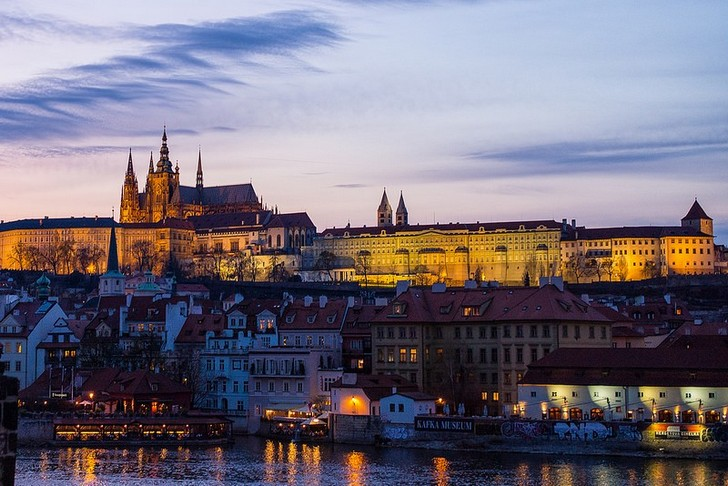
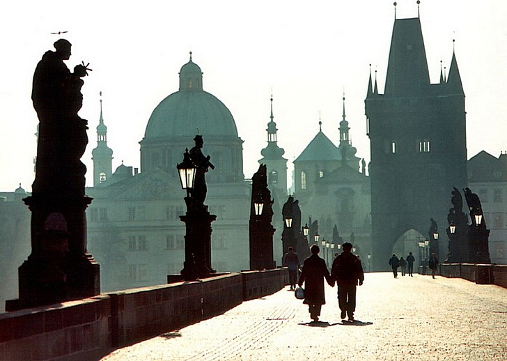
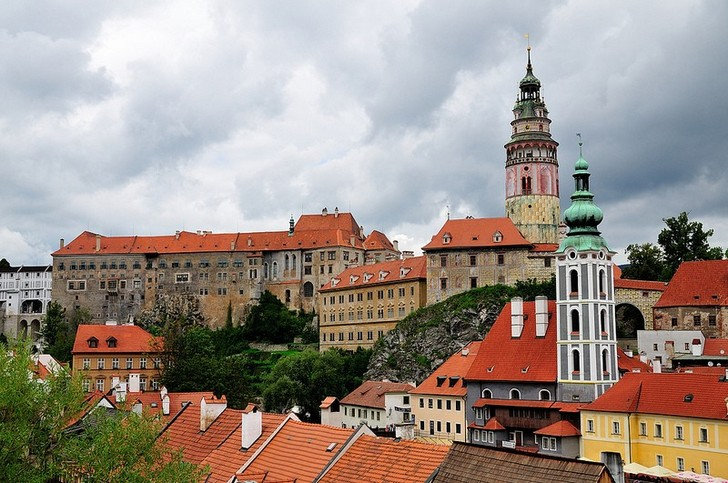
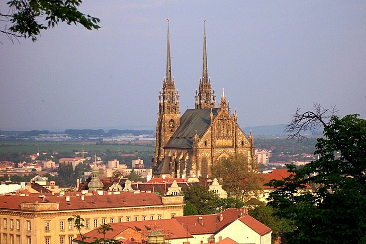
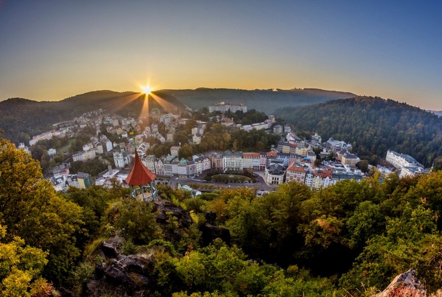
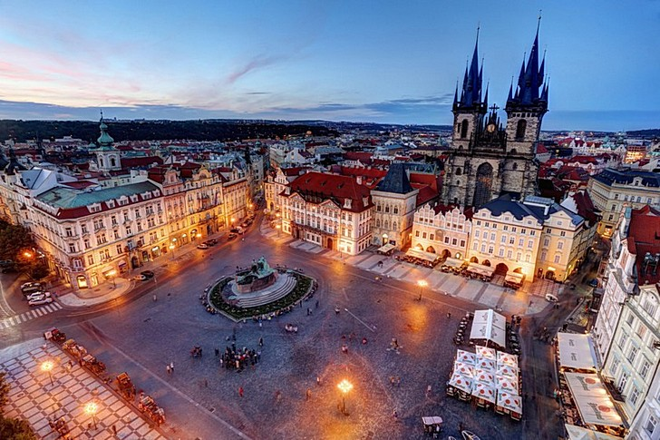
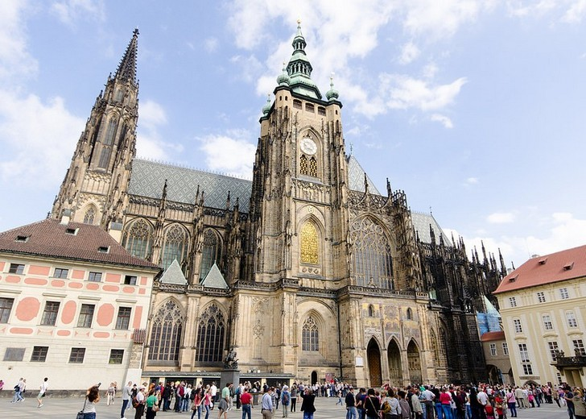
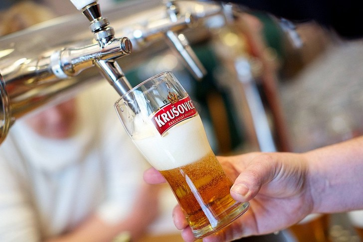

Достопримечательности
Пражский градПражский град – это один из самых больших старинных замков мира. Его территория поделена на три части. На ней самая большая плотность достопримечательностей на квадратный метр во всей Чехии. Также в Пражском Граде размещена администрация президента и Собор Св. Вита, который притягивает туристов со всего мира. У парадных ворот стоит караул, почетную смену которого можно наблюдать в полдень. |
 |
Карлов мостКарлов мост – это старинная переправа между Старым Местом и Малой страной. Построен мост был по приказу Карла IV. Он и заложил первый камень. Предмостная башня известна на всю Европу. Она украшена гербами и скульптурами. На 516 метрах моста расположено 30 скульптур и скульптурных групп. Кроме архитектурных достопримечательностей, мост славится десятками легенд. |
 |
Крумловский замокЧешский Крумлов – городок из фильма про рыцарей и романтическое средневековье. Только здесь все настоящее, а не декорации. В центре города, на возвышении, стоит Крумлов замок. Вокруг него построено 5 дворов с красивой архитектурой, историческими сооружениями, парком, мостами и потрясающим видом на город. На пятом дворе посетителей ждет конный манеж, дворец, театр. С самого замка обзор просто прекрасный. |
 |
Собор Святых Петра и Павла в БрноДва шпиля, пронзающие небо над городом Брно – это Собор Святых Петра и Павла. Высота его башен – 84 метра. Во все времена собор был символом силы духа жителей Брно. История сооружения берет начало еще в ХІІ веке. Сейчас в храме проводятся богослужения. Желающие могут подняться на смотровую площадку, с которой открывается невероятный вид на город и окрестности. |
 |
Карловы ВарыНа берегу речки Тепла, окруженный горами и лесами, расположился курорт Карловы Вары. В нем целебные источники воды, из-за которых курорт и стал лечебным. Но, по словам посетивших его туристов, целебный там даже воздух. Невероятной красоты природа и архитектура, не уступающая по очарованию Праге, так и манят туристов. Карловы Вары – это уютный уголок для исцеления тела и души. |
 |
Староместская площадьЭто площадь в самом центре Праги. Когда-то на ней был рынок. Потом она собрала возле себя яркие достопримечательности города – Пражские куранты, Церковь св. Николая, Дом у каменного колокола, а также Тынский храм. Он тоже является визитной карточкой Праги. Его высокие шпили несимметричны, чем очень интересны. Также в нем стоит самый старый орган Чехии. |
 |
Собор Святого ВитаСобор Святого Вита сравнивают с парижским Нотр-дам де Пари. Но он не стремиться быть похожим, он особенный. Это восхитительный готический храм, один из красивейших в Европе. Собор строился на протяжении семи столетий. Поэтому он приобрел идеальные очертания и детали. В середине собор украшен витражами, статуями, резьбой, высокие готические арки и потолки создают ощущение воздушности. |
 |
Пивной завод КрушовицеПиво на заводе Крушовице начали варить еще в ХVІ веке. Собственником пивоварни был Иржи Бирке. За время существования завод пережил многое. Теперь он стал одним из самых посещаемых мест в Чехии. Тут соединены лучшие современные технологии и старинные традиции. Благодаря изготовлению великолепной продукции из лучших ингредиентов, пивной завод Крушовице назван самым быстро развивающимся предприятием в Европе. |
 |